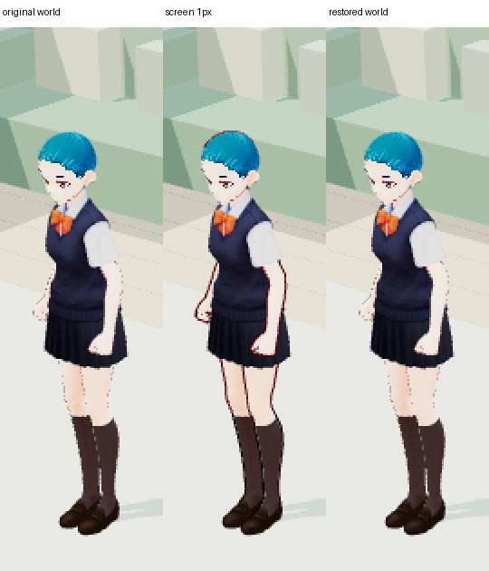
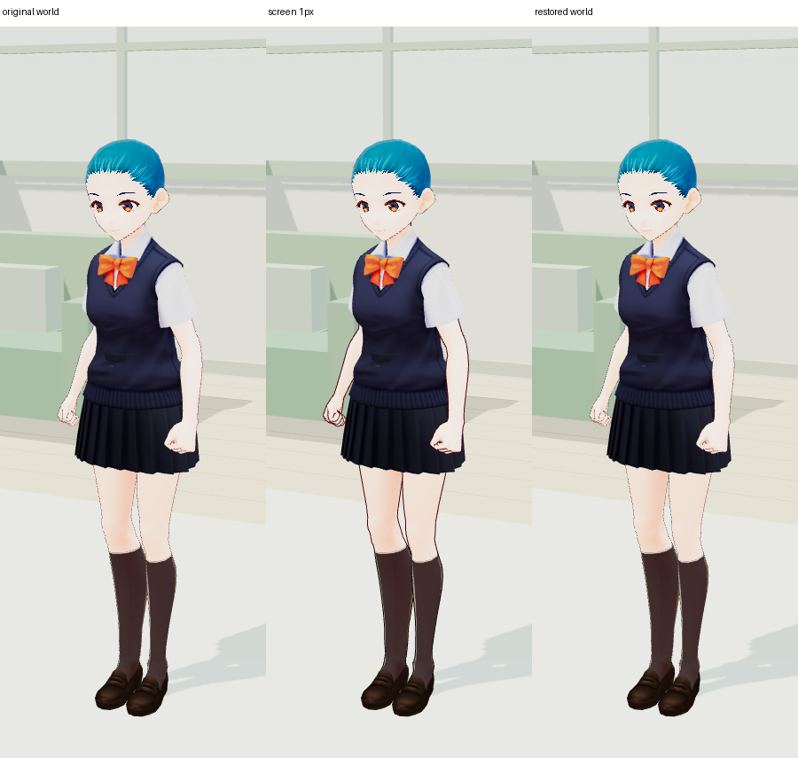
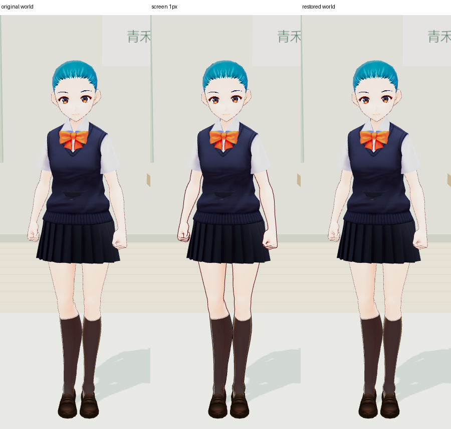
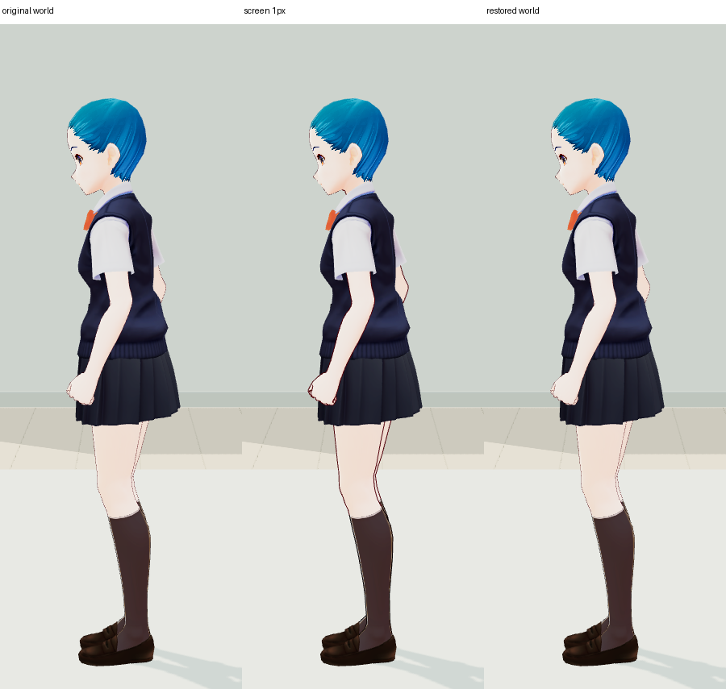
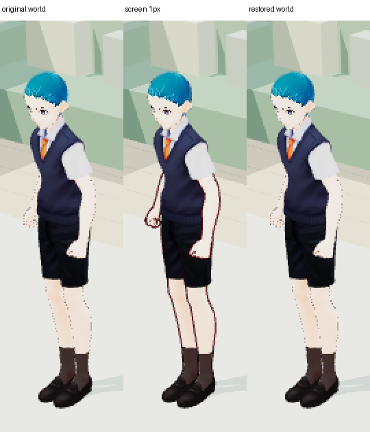
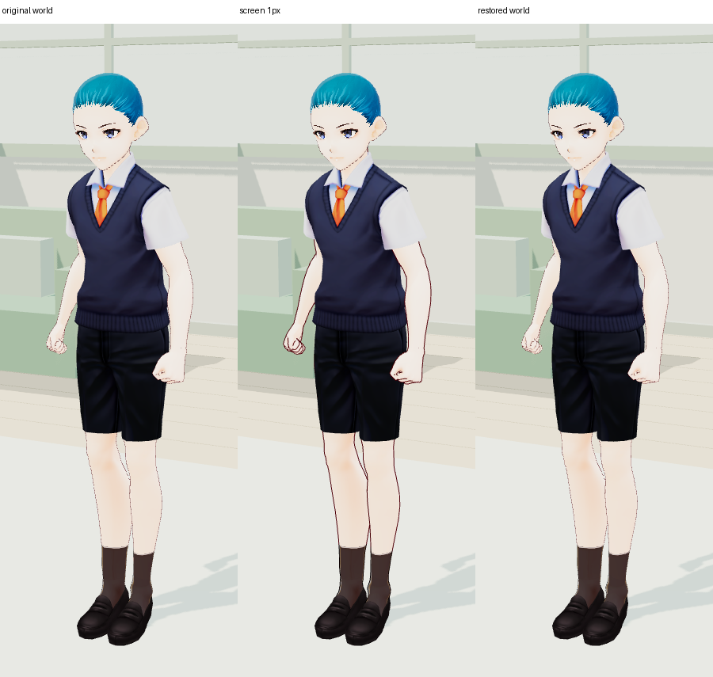
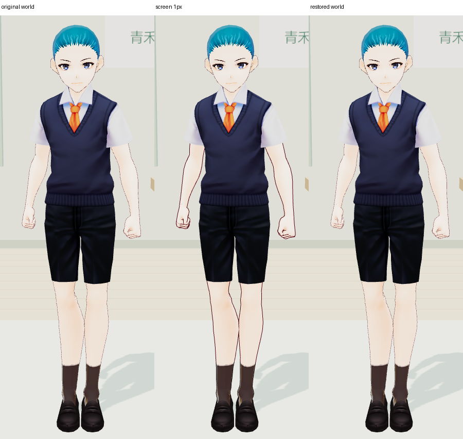
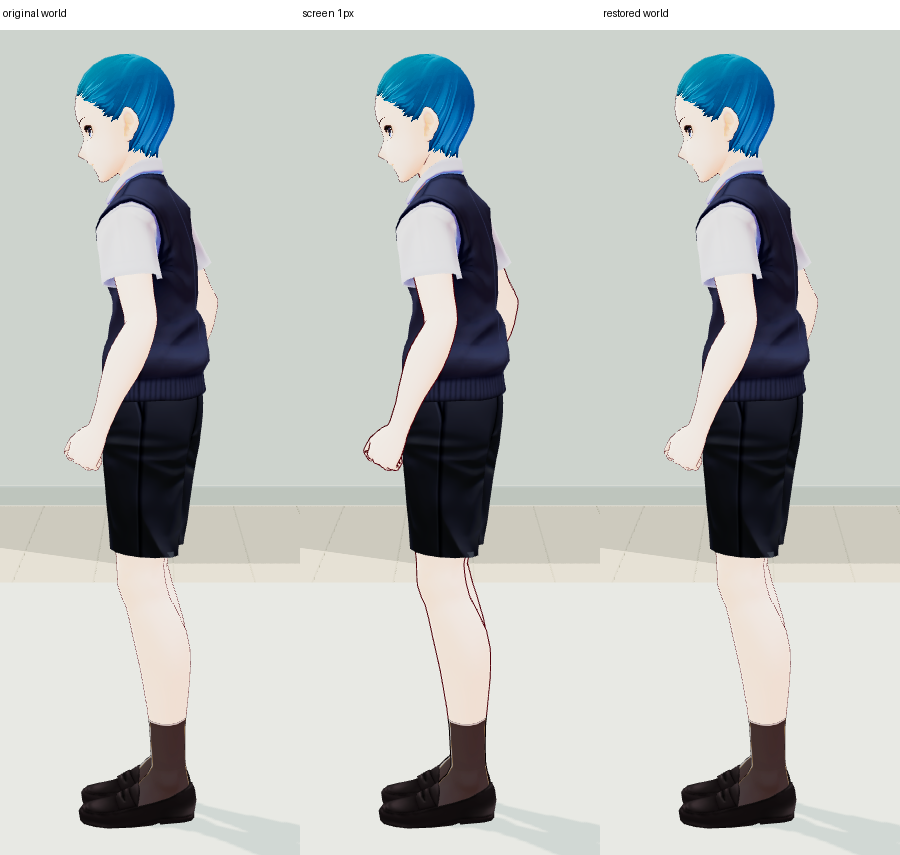

仅诊断候选，未合入产品。身体点线更连续但明显加深，女性房间视角新增头顶深边；脸部未修改。不能称边缘问题已修复。
两片均为真实请求、正常速度、同房间相机和同一路径，未剪拼。自然rAF使姿态时刻有微小差异。工程已查看全时段3fps抽帧，不能据此断言高频闪烁消失；请以完整1×影片判断风格与动态观感。
仅Body outline；WebGL drawingBufferH=928，factor=2/928。Face及其它材质、骨姿保持不变。room裁切为注明的2×最近邻放大，其余为原像素裁切。







